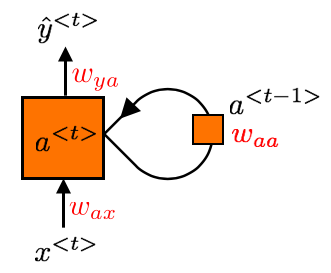
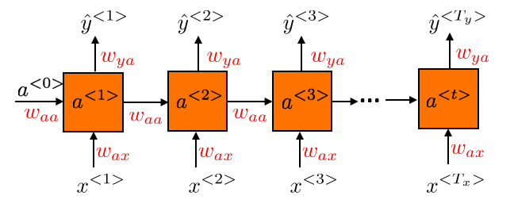
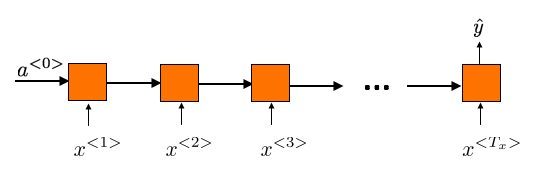
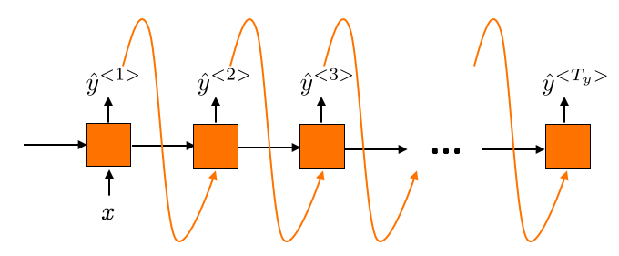
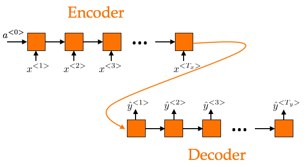

An image can catch different people's eyes differently.
However, very often, we observe an image, photo,
or painting as a whole, trying our best to take in its entirety before
arriving at any conclusion. We do not know
where the artist started first on his canvas, the process the painting was developed.
Music, video, and speech, on the other hand, have a temporal dimension that make their data sequential.
We process and store information in order. There is a before and after. As a result, traditional neural networks,
despite its tremendous success in computer vision,
cannot easily tackle problems related to sequence data.
In addition, simple deep neural networks cannot be easily applied to
problems in which inputs and outputs cannot be encoded with vectors of fixed dimensionality.
The lengths of sequence data in speech recognition, machine translation, or question answering,
for example, are not known a priori.
"Where are you going" in English (4 words) is translated as "Où est-ce que vous allez" (5 words),
or "Où allez-vous" (3 words) in French,
and "Bạn đang đi đâu đấy" in Vietnamese (5 words).
The solution to the problems mentioned above is to use a Recurrent Neural Network (RNN), which contains
a loop that allows inputs from the previous time steps to influence the output produced at the current time step.
In other words, RNN uses the knowledge it receives in the past to make predictions about the future, what is coming next.

An example of a simple unrolled RNN is shown below, where the lengths of the input sequence \(T_x\) and output sequence \(T_y\) are the same.
Each training example can contain a different number of "tokens" represented by a series of vectors at different
time steps \(\{x^{\lt t\gt}\}=x^{\lt 1\gt}, x^{\lt 2\gt}, \dots, x^{\lt T_x\gt}\). For example, a sentence
"Where are you going" can be represented using a series of 4 one-hot vectors (\(T_x=4\)),
each represents a word (token) in the sentence,
over a preset vocabulary.

An example of a many-to-many unidirectional RNN where the lengths of the
input and output sequences are the same \(T_x = T_y\)
For one exampale, at each time step \(t\), the activation \(a^{\lt t\gt}\) can be computed using the
input at that time step \(x^{\lt t\gt}\) and the activation from the previous time step \(a^{\lt t-1\gt}\).
The activation function used for this is often \(tanh\) activation.
$$a^{\lt t\gt} = g(w_{aa}a^{\lt t-1\gt} + w_{ax}x^{\lt t\gt} + b_a)$$
$$\hat{y}^{\lt t\gt} = g'(w_{ya}a^{\lt t\gt}+b_y)$$
\(a^{\lt t\gt}, x^{\lt t\gt}, \hat{y}^{\lt t\gt}\) are the activation, input, and output
for one example at time step \(t\).
The initial activation \(a^{\lt 0\gt}\) is usually initialized to zeros.
Note how the weights are shared across different time steps. This idea of parameter sharing is
somewhat similar to that in convolutional neural networks.
The loss function can be computed for each time step, for example, for cross-entropy loss:
$$\mathcal{L}^{\lt t\gt}(\hat{y}^{\lt t\gt}, y^{\lt t\gt})=-y^{\lt t\gt}\log\hat{y}^{\lt t\gt}-(1-y^{\lt t\gt})\log(1-\hat{y}^{\lt t\gt})$$
The loss function for one example is the sum of all the loss functions at each time step:
$$\mathcal{L}(\hat{y}, y)=\sum_t\mathcal{L}^{\lt t\gt}(\hat{y}^{\lt t\gt}, y^{\lt t\gt})$$
Other examples of unidirectional RNNs are shown below.

Many-to-one RNN, for example, in sentiment classification

One-to-many RNN, for example, in sequence generation

Many-to-many RNN, for example, in machine translation, where the lengths
of the input and output sequences are different
The last model shown above is an RNN Encoder-Decoder, and is very popular in sequence to sequence
learning. Basically, two RNNs forming an encoder-decoder pair are used.
The encoder extracts a fixed length vector representation
from a variable-length source sequence of symbols, while the decoder generates from this
fixed length representation a new variable-length target sequence of symbols.
Examples of such network were proposed by Cho et al. 2014 and Sutskever et al. 2014.
However, a basic RNN architecture runs into vanishing gradient problem in deep network
and consequently cannot well capture long-range dependencies, or dependencies that span
a long interval. Since the review by Bengio et al. in 2013, lots of progress has been made
to address this problem. Some of these models will be discussed in future posts.
(to be continued)
References
Andrew Ng in Sequence Models, 5th course in the Deep Learning Specialization on Coursera.
Bengio, Lewandowski, and Pascanu, "Advances in optimizing recurrent networks",
In Proceedings of the 38th International Conference on Acoustics, Speech, and Signal Processing (ICASSP), 2013.
Cho, van Merrienboer, Gulcehre, Bougares, Schwenk, and Bengio,
"Learning phrase representations using RNN encoder-decoder for statistical machine translation.",
in Proceedings of the Empiricial Methods in Natural Language Processing (EMNLP), 2014.
Sutskever, Vinyals, and Le, "Sequence to sequence learning with neural networks",
in Advances in Neural Information Processing Systems (NIPS), 2014.